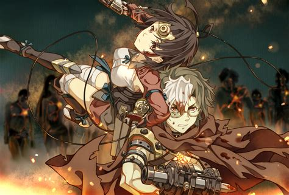
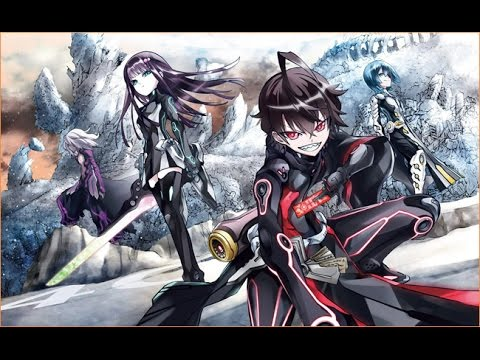
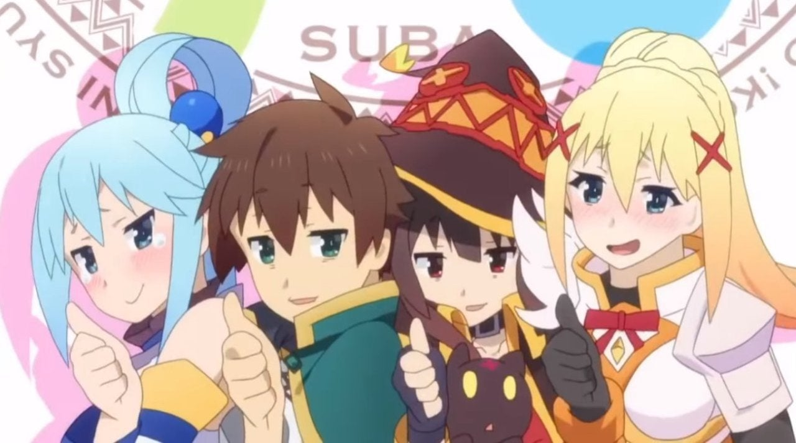
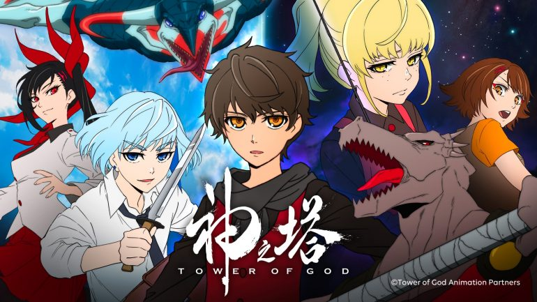
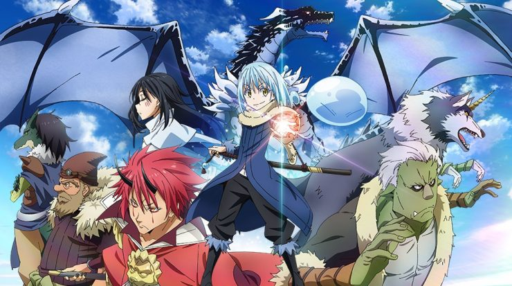
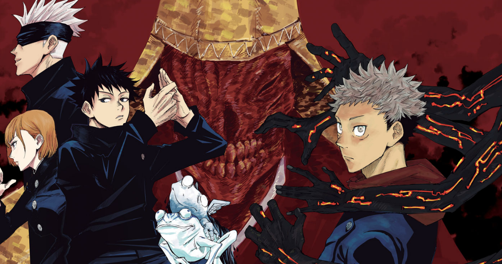
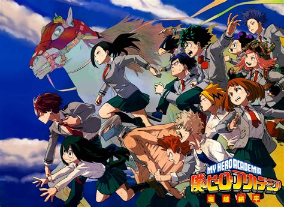
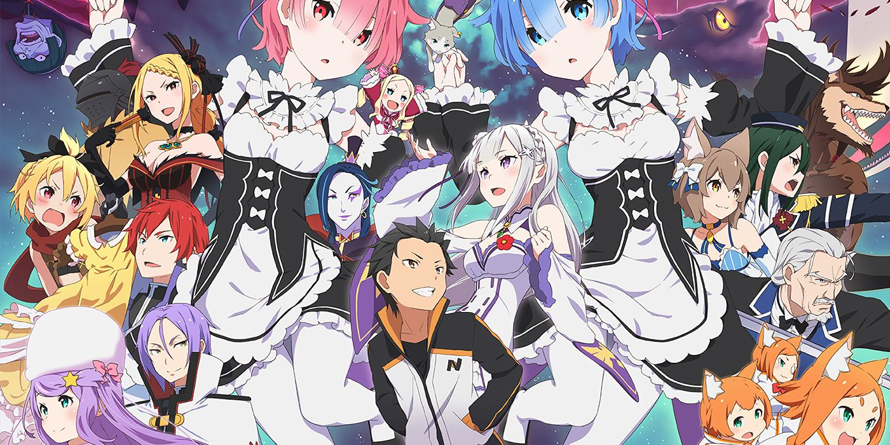

10:kotetsujou no kabaneri
Kotetsujou está en mi top 10 por que
me emocionó
mucho el ambiente,
aparte de que el protagonista tambien me gustaba
y bajó mucho por los
otros animes en emisión
09:Sousei no onmyouji
Sousei fue mi anime favorito hasta
que bnha
tomó su lugar y luego
fueron pasando
cosas que lo dejaron abajo
Pero de ser un buen anime tiene mucho
que mostrar me gustan los
personajes y la historia es original.
08:konosuba
 Konosuba me encanta ya que
me hace reir mucho,
la verdad reí bastante con esto.
otra razón es que la historia es muy buena y
muestra que Aqua tiene tremenda trama.
AGUANTE AQUA.
07: One Piece

One piece es un clásico pero la razón
es que la historia y personajes me encantaron.
GOMU GOMU SI.
06: Tower Of God
 Tower of god estuvo en el puesto 2
pero soy así y bueno, me gustó mucho la historia
y los
personajes, principalmente Anak y Baam. uwu.
05: Tensei Shitara Slime Data-Ken
Me gusta muchísimo este anime. es realmente bueno
y el personaje al princio no me gustaba. pero luego me pareció épico.
04:Jujutsu Kaisen
 Jujutsu me encanta y por eso el puesto,
la historia es original, aunque en parte es como sousei
aunque con sus grandes diferencias.
es cliché por el género hechizero o
demoniaco(incluyo espiritus).
03: Kaguya-Sama Love Is War
Kaguya me encanta principalmente por que
me hace reir y me emociona. a parte,
Kaguya me parece muy tierna y
la voz del personaje me mata. uwu
02: Boku no hero academia
Bueno bnha ME ENCANTA por los personajes
y el género. lo que mas me impactó fué el
ep 4, en el cual salva a Uraraka.
Re:Zero Kara Hajimeru Isekai Seikatsu
Que puedo decir sobre el anime que me hace felíz al ver. Puedo decir que cuando lo ví me emocionó mucho, por esa razón la obsesión. Por otro lado los personajes tienen un desarrollo muy bueno.